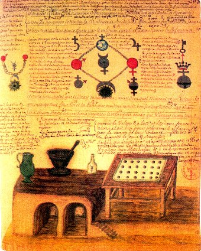
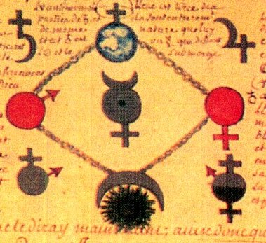
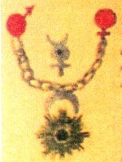
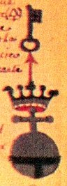
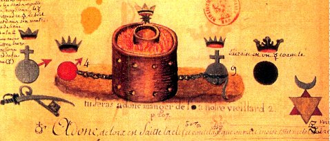
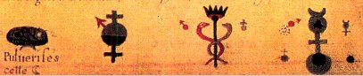
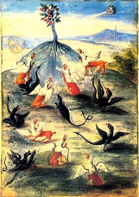
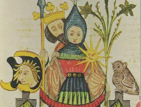

Emblema XXXIV.
revu le 7 avril 2004In balneis concipitur, & in aere nascitur, rubeus vero factus graditur super aquas. (Elle est conçue aux bains, naît dans l’air, et, devenue rouge, marche sur les eaux1.)
Enfant conçu aux bains, en naissant elle brille
Dans l’air, puis voit les eaux sous ses pieds, rutilante2.
Sur le sommet des monts, elle se vêt de blanc3,
Celle qui des savants est l’unique souci.
Elle est pierre sans l’être, et, noble don du Ciel4,
Sait rendre bienheureux l’homme à qui Dieu l’accorde.
FUGA XXXIV
L‘opinion des hommes ou leur flatterie attribue à certains mortels des naissances particulièrement merveilleuses mais à coup sûr fabuleuses. Ainsi Alexandre le Grand serait le fils, non de Philippe de Macédoine, mais de Jupiter Hammon5 ; Remus et Romulus seraient nés de Mars6, et Platon de la vierge Périctione séduite par une apparition d’Apollon. C’est ainsi que les païens ont voulu démontrer leur origine divine, de même encore que Thessalos, fils du médecin Hippocrate, s’efforce de faire croire entre autres aux Athéniens qu’il tire son origine d’Apollon. Mais nous demeurons incrédules à leur égard, sachant bien que ceux à qui ils prétendent faire remonter leur race n’ont existé ni comme hommes, ni comme dieux. Et s’il s’agit de héros qui ont pu paraître parmi les mortels comme des êtres divins, nous nous rendons compte que de tels récits ont été inventés par l’adulation de leurs sujets, de leurs disciples, et de tous ceux qui ont vanté leurs exploits au monde, et qu’ils ont été introduits dans l’opinion du vulgaire par des écrits mensongers. Mais c’est dans des conditions toutes différentes que les philosophes attribuent à leur fils une conception et une naissance inhabituelles. Celui-ci possède en effet, par rapport à tous les autres êtres nés dans le monde, cette particularité que sa conception a lieu aux bains et sa naissance dans l’air7.
Les femmes stériles par excès de froideur et de sécheresse8 peuvent, nous le savons, tirer grand profit des bains chauds9 et devenir ainsi capables de concevoir, mais, que cette dernière opération doive se produire ou se soit produite pendant le bain, on ne l’a jamais entendu dire. Cela paraît n’appartenir qu’à cet enfant, en raison de la capacité très particulière d’une nature admirable. On dit ailleurs que sa conception a lieu au fond du vase et sa naissance dans l’alambic. Cette affirmation offre plus de clarté. En effet, les eaux du bain, s’il en est, se trouveront, non au sommet ou au milieu, mais au fond du vase, tandis que, dans l’alambic, les vapeurs sont aériennes. Dès que la conception a eu lieu, il monte donc dans l’alambic et il naît dans la couleur blanche. Au fond c’est le noir qui domine ; le Rosaire en parle en ces termes :
" La conception a lieu lorsque la terre se résout en poussière noire et commence à retenir une petite quantité de mercure. Alors en effet le mâle agit sur la femelle, c’est-à-dire l’azoth sur la terre. "10
Et peu après :
" La conception et les fiançailles ont lieu dans la pourriture au fond du vase, et les enfants sont engendrés dans l’air, c’est-à-dire dans la tête du vase ou alambic. "
Et la conception aux bains n’est pas autre chose que la putréfaction dans le fumier. Le Rosaire en effet continue ainsi :
" Le corps ne fait rien s’il ne pourrit, et il ne peut pourrir si ce n’est à l’aide du mercure. Et il faut que la putréfaction se fasse sans retard au moyen d’un feu très lent de fumier chaud et humide, à l’exclusion de tout autre feu, de façon que rien ne monte. "11
Car si quelque chose montait, il se produirait une séparation des parties, ce qu’il faut éviter jusqu’à ce que le mâle et la femelle soient parfaitement unis ensemble ; l’un reçoit l’autre et le signe en est le noir de la solution parfaite qui paraît à la surface. Sa naissance est blanche ; elle a lieu au sommet des montagnes, c’est-à-dire dans l’air ou dans l’alambic12. Ce que Rosinus explique ainsi à Euthicia :
" Le Sage a dit : Prenez les matières extraites de leurs minières ; faites-les monter aux lieux plus élevés et envoyez-les du sommet de leurs montagnes pour les ramener à leurs racines. "13
Et plus loin :
" Par montagnes, il entend les cucurbites, et par sommets des montagnes, les alambics. Car en langage imagé, " envoyer " signifie recevoir leur eau, à travers l’alambic, dans le récipient ; " ramener sur les racines ", c’est les ramener sur ce dont elles sortent. Et il a appelé les cucurbites " montagnes ", parce que dans les montagnes on trouve le soleil et la lune. De même, dans ces montagnes que sont les cucurbites, leur soleil et leur lune sont engendrés. "14
Telles sont ses paroles.
Ensuite il devient rouge et commence à aller sur les eaux, c’est-à-dire sur les métaux liquéfiés au feu, qui se présentent à la manière de l’eau mercurielle. Cet enfant est en effet le maître des eaux et il exerce sur elles son empire, tel Neptune15 ; il est le roi des mers et le possesseur des montagnes. On raconte de Xerxès, roi des Perses, que, se préparant à conduire une expédition en Grèce, il envoya une ambassade à la mer et au mont Athos, pour qu’ils ne lui causent aucun dommage, l’une par ses flots, l’autre par la violence de ses flammes, déclarant que, s’il en était autrement, il tirerait vengeance de tous deux16. Mais ce conte fut adressé à des sourds : la mer engloutit plusieurs de ses navires, l’Athos en fit périr un nombre important par l’incendie. Irrité, le roi, agissant en maître de la mer et des monts, fit infliger à la mer un nombre déterminé de coups de fouet et fit précipiter dans la mer une grande partie de la montagne17. Mais ces traits prouvent davantage l’audace que la prudence d’un si grand roi. Celui dont nous parlons purifie toutes les eaux de leurs obstacles et de leurs souillures, non par un décret mais par un acte, et s’avance librement sur elles. De plus il les coagule (ce qui est davantage) afin qu’elles soient assez dures pour porter son char, elles qui auparavant ont porté des navires. Il met les montagnes au même niveau que les plaines et ne craint pas les flammes du feu et, ainsi, il se rend librement où il veut, des colonnes d’Hercule aux colonnes de Dionysos, aux confins les plus reculés de l’Inde18.
Notes1. Ce sont les circonstances de l'apparition de la Pierre qui sont évoquées dans ce chapitre. Elle est conçue dans un mélange d'AIR et d'EAU, éléments propres au Mercure. Puis, apparaît la blancheur [qu'il faut comprendre par l'entendement], c'est-à-dire un signe permettant d'affirmer que la conjonction est radicale. Ce signe est peut être en rapport avec les couleurs figurant sur la queue de paon, sous forme d'irisations. Enfin, la teinture apparaît à force d'évaporation très progressive de l'eau mercurielle, ce qui fait dire aux alchimistes que l'enfant, devenu rouge, marche sur les eaux : c'est le Mercure qui s'empâte peu à peu, laissant apparaître les cristaux dans des géodes.
2. Ce signe brillant a été diversement entendu par les commentateurs. Pour nous, les mots suivants sont semblables : marmaroV, stilbew, argoV. Ils indiquent la forme et la qualité de la matière à l'époque de la conjonction. On la désigne, à ce stade, par le nom de Mercure [Mercure l'étincelant : stilbwn ; radians, d'après Pline; apparence due à son voisinage du soleil]. Il n'est pas indifférent, en effet, que la planète Mercure [pour l'hermétiste] soit la plus proche du Soleil, point fixe et Soufre du magistère. C'est, en tout cas, une telle opération que préconise de réaliser l'Anonyme d'Huginus à Barma :« Vous remplirez pleinement cet objet, si vous réduirez le Soleil en Soufre & en Mercure, qui sont sa première matière on substance, ou ce qui est la même chose, si par le moyen de notre Mercure & par un artifice secret, mais connu des Philosophes, vous ramenez le Soleil à l'état dans lequel il avait été premièrement mis par la Nature, c'est-à-dire, si vous le réduirez en un corps très brillant [...] » [Le règne de Saturne changé en siècle d'or, cap. XXIII]
3. Nous avons eu l'occasion d'affirmer à plusieurs reprises que la conjonction des deux natures métalliques s'opérait, par cabale, au sommet des montagnes, parce qu'alors, la couleur y est violette ou bleu-noir. Et c'est aussi, naturellement, à leur sommet que la TERRE est la plus proche du ciel [AIR], mais cela est un truisme [1, 2, 3, 4, 5, 6, 7, 8, 9, 10,]
4. les textes disent qu'elle est « pierre et non pierre », mais c'est pour désigner l'une des matières premières qui peut se présenter comme une efflorescence.
5. Les commentateurs ont longtemps cru que le sel d'Hammon était du chlorhydrate d'ammoniaque. Nous ne sommes pas de cet avis : le sel hamoniac des Sages [appelé aussi sel harmoniac] se trouve en abondance sur les plages des mers et des océans. Curieusement, son symbole se rapproche de celui du transistor. Par coïncidence, les transistors sont faits de silicium. Le fait intéressant est que le sel d'Hammon permet de retenir le Soufre blanc, en le fixant [cf. Soufre, expériences de Marc-Antoine Gaudin].
6. Allusion à Phobos [1, 2, 3] et Deimos.
7. C'est par cabale qu'il faut, naturellement entendre cette assertion, que d'aucuns qui ne seraient pas au fait des secrets des alchimistes, auraient tôt fait de mettre au compte d'un délire d'interprétation. Le bain des astres constitue l'un des arcanes les plus réservés de l'oeuvre et, à en croire Fulcanelli, seuls Artéphius et Pontanus, de même que Lavinius, auraient osé en dire quelques mots. Comment porter à la lumière ce qui est « en puissance » [les hermétistes disent occulte] ou en « acte », voilà le but du 3ème oeuvre. Rares sont les Artistes qui ont parlé sans voile de ce haut fait. On connaît sur le sujet un écrit du sieur Molinier, appelé l'Alchimie de Flamel [ouvrage évidemment apocryphe puisque Flamel n'a sans doute jamais écrit une ligne d'alchimie] où se côtoient de somptueux dessins en couleurs agrémentés d'un texte qui passe pour illisible. Nous avons souhaité ici ajouter quelques explications aux figures que l'on verra ci-dessous et qui permettent de donner un sens presque palpable à l'expression mystérieuse de « bain des astres ». D'ailleurs, une section a été consacrée sur le sujet, mais cette section se ressent d'un côté spagyrique que réprouvent les véritables Artistes. L'occasion nous est ainsi fournie, d'unir à la cabale de John Dee [Monade Hiéroglyphique] des éléments d'authentique cabale hermétique.

Extraits de l'Alchimie de Flamel, se rapportant au Bain des Astres
I. Planche I
Nous observons sur cette planche en bas les instruments du laboratoire, avec un four en miniature, l'escalier des Sages à droite, le Mercure visible dans un bocal, vraisemblablement bouché à l'émeri, un mortier et un vase. A droite une table avec ce qui semble être un filtre [criblum]. La partie supérieure est l'oratoire et donne à voir des constructions mentales des plus intéressantes. En haut et au centre, une structure cyclique, dont le centre est le Mercure, centré d'un point, représentant le fixe. La structure cyclique est en relation avec la préparation de ce Mercure fixé. Les planètes en rouge, Mars et Vénus, sont en relation avec le Bélier et le Taureau, deux des trois signes cardinaux, avec les Gémeaux, qui indiquent l'époque propice pour entamer le magistère. Naturellement, cette époque est de nature hermétique : ce n'est que par

FIGURE I
(détail d'un mss de la bibliothèque nationale)cabale qu'il faut entendre les mois de mars, d'avril et de mai. Mars représente le vitriol romain et Vénus, le sel d'Aphrodite [mais cela n'est vrai qu'en première approximation, parce que Vénus, par permutation, renvoie à la Terre, et que Mars désigne aussi l'Esprit universel]. Mars et Vénus sont liés au symbole de la Terre dans laquelle nombre d'alchimistes voient le symbole de la stibine vulgaire. C'est pour eux une indication sur le régule d'antimoine [il ne nous appartient pas de décider s'ils ont tort ou raison, mais Fulcanelli semble de bon conseil quand il avise le lecteur que l'antimoine peut se lire l'Âne-Timon, dont la traduction vulgaire est le Pont aux Ânes]. Le grand Adepte veut signaler par là que l'étudiant peut prendre un mauvaix chemin s'il se laisse abuser par l'éclat brillant du stibium de Tollius, c'est-à-dire par l'antimoine saturnin d'Artéphius, l'un des plus grands maîtres de la cabale hermétique. Ce n'est pas tout : John Dee, dans sa Monade Hiéroglyphique, a fait voir que les hiéroglyphes astronomiques qui symbolisent les matières de l'oeuvre n'étaient pas des corps simples et qu'on pouvait les décomposer en une série mercurielle et une série soufrée. C'est ce qu'expriment les signes de Saturne et de Jupiter, qui encadrent la Terre [dans laquelle Fulcanelli voit l'albâtre des Sages]. On peut, ainsi, considérer que le symbole de la Terre résulte de l'addition de Saturne et du dernier quartier de la Lune. Saturne est formé lui-même du symbole de la croix [crux pour creuset] et de la demi Lune, en son premier quartier, s'accordant bien avec la signification du premier quartier lunaire qui désigne le Mercure en son premier état. L'ensemble des deux demi Lunes donne la pleine Lune, qui désigne le Rebis ou hermaphrodite. En somme, la stibine représente la Terre mise au creuset, c'est-à-dire le Compost philosophal [Mixte du Mercure et du Rebis ; on parle de double Mercure ou de Mercure animé]. Quant au symbole de Jupiter, il résulte d'une simple translation associée à une rotation du symbole de Saturne, selon le même mécanisme qui transforme Vénus [à l'Aurore, Lucifer] en Terre [au coucher, Vesper, voyez la figure XII de notre humide radical métallique]. Evidemment, on pourrait croire gratuite cette hypothèse ; la solution, pourtant, semble résider dans la partie inférieure de la structure cyclique qui montre un soleil noir, surmonté d'un croissant de lune concave en bas. C'est là cette rotation de p/4 vers la gauche qui donne l'hiéroglyphe provisoire VÇ. Une translation de p/2 donne là encore la mutation définitive de Saturne en Jupiter. Nous avons donc le schéma suivant :
VÉ --> VÇ --> ÉV
Quant aux hiéroglyphes du bas, ils montrent l'association des deux symboles du haut. Celui de gauche résulte donc de l'association {Mars, Saturne} et celui de droite, de l'association {Vénus, Jupiter}. Observez l'aspect double de Vénus, en bas à droite, et la flèche indiquant la forme pontique des éléments préparés. Voyez encore les deux images suivantes, tirées de la même planche.


FIGURE II
(planche I, détail)L'image de gauche assure de la façon la plus formelle que le Mercure - ou du moins la partie active - c'est-à-dire pontique - est assurée par un Mixte provenant d'éléments de Mars et de Vénus [cf. Laboratoire 2]. L'image de droite nous indique que la putréfaction est la solution de la conjonction. elle est en effet l'hiéroglyphe de l'eau salée des Sages, laquelle n'est évidemment pas l'eau de mer commune. La partie la plus importante est apportée par Vénus [c'est-à-dire la base], tandis que la partie acide est apportée, comme l'indique la flèche rouge verticale, par Mars.
II. Planche II
C'est la manière de faire le Rebis qui est indiquée ici.

FIGURE III
(planche II, détail)Cette image est équivalente à la planche I du Donum Dei ou à l'emblème qui figure en frontispice du Triomphe Hermétique de Limojon de Saint-Didier. Il faut donc prendre garde à ne pas confondre Mars et Vénus sur les deux planches. Car, planche I, Mars est envisagé comme vitriol romain au lieu qu'ici, il faut y voir le Bélier, c'est-à-dire le lieu d'exaltation du Soleil [c'est le Roi]. Même chose pour ce qui concerne Vénus, qui est le lieu d'exaltation de la Lune [c'est la Reine]. Le sens réel des planètes nous est, d'ailleurs, indiqué par les couronnes qui les surmontent. Le résultat de la conjonction est annoncé par l'embryon hermétique qui figure sous forme d'un soleil noir. Chose normale, puisque le premier état du Rebis s'obtient pendant la phase de putréfaction. C'est là que se déroule la séparation philosophique dont l'agent est explicitement décrit à gauche, au-dessus d'un sabre, instrument contendant. La clef qui l'accompagne nous montre, encore, s'il était besoin, que décidément, la putréfaction est la clef par laquelle on obtient la conjonction. On retrouve au-dessus du sabre et de la clef l'image de la figure I, association de Mars et de Saturne où l'on devine l'agent de la dissolution. Au centre, l'athanor philosophique au triple vaisseau. A droite et en bas, le sceau de Salomon, qui indique l'union de l'Eau et du Feu, affirmant ainsi l'aspect du dissolvant qui se présente, selon les alchimistes, comme une eau ignée ou un feu aqueux. Mais le sceau de Salomon, c'est aussi une indication sur le labyrinthe hermétique dont on ne peut trouver le chemin qu'avec le fil d'Ariane. Pour le détail, reportez-vous à ce que nous avons écrit dans les deux sections citées au début.

FIGURE IV
(planche II, détail, bas)Autant la figure III montre, à la manière d'une synthèse mentale, la préparation de l'embryon hermétique, autant la figure IV nous montre l'aspect élémentaire de la dite opération. Il faut évidemment que les matières soient mises en dissolution [notez que cette dissolution présente deux faces : on peut la comprendre comme une désunion du corps et de son humide métallique - voyez là-dessus Atalanta fugiens, XXXIII - et alors il s'agit de matières mises en forme de chaux - soit il s'agit de la dissolution des matières dans le dissolvant lui-même, auquel cas nous sommes déjà à la 1ère phase de la conjonction, à en croire le Rosaire]. Quoi qu'il en soit, l'attention est attirée par l'hiéroglyphe de la figure I, que nous reconnaissons comme un Mixte de Vénus et de Jupiter et qui permet de montrer, à l'instar d'un panneau de signalisation, la voie exacte à parcourir pour parvenir au double Mercure, c'est-à-dire à l'animation du premier Mercure. Ce double Mercure est symbolisé par deux serpents s'enroulant autour de la tige fixe du caducée d'Hermès ; on le signale aussi par l'hiéroglyphe des Gémeaux dont il constitue la véritable trace [voir ici l'Atalanta XXV et la cheminée hermétique sise à Avignon, à propos de la fable de Castor et Pollux]. Quant au signe de droite, il est assez inhabituel : on y devine la stibine, liée au Mercure. C'est le signe brillant que l'on reconnaît par ses épithètes variées [marmaroV, stilbew, argoV, etc.]. Il s'agit du résultat de la première partie de la Grande Coction dont le signe est indiqué en petit, sous forme d'un globe noir et que nous avons vu, indiqué en grand, sur la partie supérieure de la planche II [d'ailleurs, les petits signes inscrits à la figure IV sont ni plus ni moins que des annotations de cabale. Elles sont assez claires pour que nous passions outre]. La croix centrale, séparant d'une part Diane aux cornes lunaires, et d'autre part ce qui apparaît comme la base de la matière, c'est-à-dire sa partie corporelle, dit avec assez de netteté qu'il faut savoir joindre les extrémités du vaisseau de nature par l'entremise du feu secret.
¯
L'analyse que nous venons de faire permet de donner son sens véritable à l'expresion de « bain des astres ». La figure I montre les éléments mis en jeu ; la figure II, les associations fondamentales et la clef de la dissolution. Enfin, la figure III montre de facto le bain des astres. La figure IV est un résumé des opérations, sorte de pense-bête. Nous observons de façon précise à quoi tient la conception de l'embryon hermétique. Il nous reste à montrer comment sa naissance peut avoir lieu dans l'air.
Déjà, Philalèthe, dans son Air des Sages [Introïtus, VI] nous met sur le bon chemin en nous faisant voir que les mots aer [air] et aes [cuivre, airain, bronze] sont liés. Le problème est lié au fait que Maier, comme Philalèthe joue sur les phases du 3ème oeuvre, en confondant la phase humide et la phase sèche de la Grande Coction. Or, la naissance de la Pierre est conditionnée par l'évaporation lente du dissolvant, manière pour l'Artiste que sa Pierre est conçue dans l'AIR, en tant que l'EAU se transforme en AIR. C'est ce qu'expriment nos équations de transmutation des éléments de Platon :
C'est la 2ème équation qui nous intéresse : la TERRE [entendez la Pierre] résulte d'un feu aqueux [ou eau ignée, c'est la même chose] privé de son AIR. Autant dire que notre Pierre n'apparaît qu'à partir d'une solution sursaturée du dissolvant, à force de perte en AIR. D'où l'idée générale des alchimistes de faire croire que leur Pierre naissait dans l'AIR. Notez encore que, de façon tout à fait singulière, les expériences de synthèse minérale de Sainte-Claire Deville [cf. Atalanta, XXIV] ont fait voir que des cristaux pouvaient, d'une certaine manière, cristalliser dans un air particulier où un agent [qu'en cabale on appelle un voleur] s'empare d'une substance pour laquelle il possède de l'affinité à haute température pour la reposer plus loin, à un endroit moins chaud.
8. froideur et sécheresse, c'est-à-dire TERRE et AIR.
9. chaleur et humidité : FEU et EAU. Il faut comprendre que l'eau permanente des alchimistes est un feu aqueux, rappelons-le, ou une eau ignée. Mais le principe Soufre est lui-même dénommé FEU par les Adeptes, dans la mesure où le Soufre se trouve dissous dans le Mercure [dont les éléments emblématiques sont l'EAU et l'AIR].
10. Par la voie sèche, les choses se présentent ainsi. Les subtances à unir sont mises dans un creuset brasqué, sous forme porphyrisée, y compris les éléments du Mercure. Au début de la Grande Coction, les matières se dissolvent sous l'effet du calorique et il faut un certain temps avant que la dissolution soit totale et que la matière ardente apparaisse fluide comme de l'eau : c'est la putréfaction [oeuvre au noir] qui correspond à l'état de chaux métalliques dissoutes. A une époque ultérieure de la Coction, un signe apparaît à la surface de composé qui signale l'apparition des premiers cristaux ou qui est l'indicateur d'une solution sursaturée. Sur le sujet de la cristallisation, voici un extrait d'un ouvrage sur les métaux d'Alfred Ditte :Dès 1849, Manross reproduisait la schéelitee, minerai des filons d'étain, en chauffant du tungstate de soude avec un excès de chlorure de calcium ; c'est, au fond, le même procédé que Debray employait quand il faisait passer un courant d'acide chlorhydrique sur un mélange de tungstate de chaux amorphe et de chaux porté au ronge : le chlorure de calcium qui se forme sert de fondant, et l'on recueille des octaèdres quadratiques de schéelite. Il a fait cristalliser l'alumine de la même façon, en dirigeant de l'acide chlorhydrique sur de l'aluminate de soude fortement chauffé : ici c'est le chlorure desodium qui constitue le bain en fusion, et l'on obtient des cristaux de corindon. Le wolframm qui, lui aussi, est un produit des filons stannifères, a été reproduit en fondant dans du sel marin un mélange de tungslate de soude et de chlorures de fer et de manganèse : on recueille des cristaux identiques avec les divers échantillons naturels de wolframm.Ainsi voit-on, comme du reste cela a été vu dans d'autres sections [cf. Mercure de Nature] que le bain des astres est protéiforme et que, même parfois, il peut venir à manquer, le vaisseau de nature étant constitué par un magma vitreux [cf. réincrudation sur la dévitrification, observée par Réaumur]. Notez que ce procédé de vétrification donne avant tout du Soufre rouge cristallisé [cf.Atalanta XXIV et XXV, XXX].
Avec un mélange de soufre, de sulfure de ter et de sulfure de potassium, H. Deville a preparé de beaus cristaux cubiques de pyrite ; la greenockite a été reproduite d'une manière analogue par MM. H. Deville et Troost avec un mélange d'oxyde de cadmium, de sulfure de baryum, et de spath fluor.
Debray a également utilisé le sulfate de potasse comme substance minéralisatrice : si en effet l'on fond à très haute température du phosphate d'alumine, par exemple, avec unexcès de ce sulfate, il y a double décomposition, formation de phosphate alcalin qui se volatilise en partie, et de sulfate d'alumine qui se détruit entièrement ; l'alumine qui reste cristallise et se change en corindon.VI. FORMATION DE CRISTAUX A LA SUITE DE RÉACTIONS ACCOMPLIES A L'INTERIEUR D'UNE MASSE VITREUSE. —
On peut par voie de fusion ignée, sans fondant d'aucune nature, reproduire les minéraux cristallisés des roches éruptives. Dès 1866, Daubrée a reconnu que si, après avoir fondu des roches naturelles, on les soumet à un recuit convenable, la roche se régénère et donne un produit ne présentant, avec la matière de laquelle on est parti, que des différences de détails peu importantes et provenant, sans nul doute, de ce que la formation de la roche s'est effectuée dans des conditions thermiques foules différentes ; il obtint par exemple, dans ses expériences, des échantillons visibles à l'œil nu de péridot, de pyroxène, d'enstatite..
MM. Fouqué et Michel Lévy, dans une longue et importante série de recherches commencées en 1878, ont démontré qu'un magma vitreux qui passe lentement par des températures graduellement décroissantes peut fournir plusieurs espèces. Les silicates cristallisés sont toujours un peu moins fusibles que les verres qui proviennent de leur fusion, de sorte qu'il suffit de maintenir pendant quelque temps une masse vitreuse à une température légèrement supérieure à celle de sa fusion pour voir qu'elle se dévitrifie, c'est-à-dire qu'il s'y développe des éléments cristallins. En outre, comme les diverses substances qui peuvent se produire aux dépens d'un même magma vitreux ne possèdent pas toutes la même fusibilité, il en résulte que si l'on soumet un verre à une série de températures décroissantes, tout en restant supérieures à celles de sa fusion, les divers minéraux capables de se former prendront naissance les uns après les autres et les moins fusibles cristallisant aux températures les plus hautes, seront moulés, englobés par ceux qui se consolideront postérieurement.
Une masse de substance vitreuse, soumise à un recuit prolongé, perd par suite sa transparence ; le culot prend une cassure inégale, un aspect rugueux et parfois, dans les soufflures, on observe des géodes formées de divers éléments cristallographiquement déterminables. Les substances ainsi produites peuvent être très simples ; c'est ainsi que MM. Fouqué et Michel Lévy ont constaté que, lorsqu'on soumet au recuit un verre très siliceux et chargé de fer, il donne naissance à la formation de lamelles hexagonales de fer oligiste, au milieu du magma ; avec une composition plus basique, on obtient surtout du fer oxydulé. Ces savants sont arrivés à reproduire, à l'aide de leur méthode, la plupart des minéraux des roches éruptives.
Introduction à l'étude des Métaux, Alfred Ditte, Société d'Ed. scientifiques, 1902
11. Se pose ici le problème de différencier la voie sèche et la voie humide. Car le texte du Rosaire renvoie à une voie humide totalement chimérique. Au lieu que, si l'on comprend de façon imagée, c'est-à-dire selon les règles de la cabale hermétique, nous trouvons une représentation de la putréfaction ainsi que du feu, qui doit être chaud et humide. Bernard Le Trévisan, dans sa Philosophie Naturelle des Métaux, l'appelle feu d'écorce.
12. Même observation. Sur l'allégorie du sommet des montagnes, voyez Dom Pernety :« Cette pierre, dit Alphidius, [...] se repose sur le sommet des montagnes» (F.E.G. II 161).
Dans le Traité du Sel, le sieur Clovis Hesteau de Nuysement s'est exprimé d'une façon sibylline :
« [...] c'est un oiseau qui vole sur le sommet des montagnes, et néanmoins c'est un poisson ; c'est une Vierge qui n'a point été touchée, et toutefois qui enfante et abonde en lait ; ce sont les rayons du Soleil et de la Lune, et le feu du Soufre, et toutefois c'est une glace très froide [...] » [cap. V]
Mais comme il existe deux Traités du Sel, on ne sait au juste si celui-ci a été rédigé par De Nuysement ou s'il s'agit d'une compilation effectuée par Michel Sendivogius...Dans ce passage, l'auteur cite le Mercure en le décrivant comme un agent de procréation, qui enfante sans avoir été touché, ce pourquoi il est comparé à la Vierge : il s'agit de notre agent minéralisateur. Il paraît que l'or, dans les anciens temps, se recueillait dans les hautes montagnes, d'où l'allusion des textes alchimiques aux montagnes : l'évocation de l'or, la couleur bleu-noir du ciel au sommet des montagnes, les efflorescences salines, etc. En latin, caerula, renvoie à la couleur bleu foncé du rémora qui rappelle la violette grecque [ion]. Mais caerula, c'est encore la mer [les plaines azurées] où le lien apparaît plus évident avec le Mercure. L'association de la mer et du ciel azuré permet de comprendre l'allégorie d'Hermès, dans sa Table d'Emeraude, en associant la couleur laiteuse de la mer hermétique et la couleur violette du ciel. C'est donc au sommet des montagnes que les alchimistes ont placé le lieu singulier de la conjonction des natures métalliques. Ainsi, la tête du vase, c'est le ciel firmamental, le lieu de conjonction des deux principes qui s'opère, nous disent les textes, au sommet des montagnes, là où la terre rejoint le ciel. C'est pourquoi l'on aperçoit une fleur au sommet d'une colline sur l'une des gravures du livre d'Abraham Juif, que cite Nicolas Flamel.

FIGURE VI
(figure 4, Libre d'Abraham Juif, Paris, Bibl. Nat., vers 1700)On retrouve le même symbolisme sur la figure 12 du De Lapide Philosophorum de Lambsprinck. L'idée qui domine est l'élévation d'un état de chaos vers la lumière, le bourgeonnement et la maturation.
13. C'est-à-dire l'humide radical métallique. La manière dont on doit extraire les minéraux de leur gîte est expliquée par l'une des planches du Splendor Solis. Nous ajouterons simplement que là où Protée a porté son action dans les entrailles de la Terre, l'Artiste trouvera l'étoile et la fleur qu'il cherche.
14. Que choisir comme version ? Par expérience, nous savons que là où les alchimistes semblent précis, ils prêchent le faux et qu'ils ne sont jamais plus clairs que là où ils ne semblent dire que des banalités...Mais si l'on tient pour correct le raisonnement par analogie, appliqué à la cabale bien appliquée, on se rendra compte rapidement que dans le haut de la cornue, ce sont des fleurs que l'Artiste recueillera [les fleurs sont le signe d'un métal mis dans un état très divisé où sont l'indice d'une chaux métallique]. Plus haut encore, dans le col de la cucurbite, c'est un sel gazeux qui se déposera, plus volatil que la fleur. Enfin, plus loin encore, dans le récipient, la vapeur se résoudra en eau [c'est le cas dans la préparation de l'aqua fortis, par exemple]. Et dans le fond de la cornue ne reste qu'une terre noire, charbonneuse qu'on appelle en général le Caput mortuum de la préparation de l'aqua fortis, pour continuer l'exemple précédent. Quant à l'alambic, il ne s'agit nullement de celui employé pour une vulgaire distillation : les alchimistes ont, par exemple, donné le nom de chapiteau d'alambic à leur matière parvenue au noir et celui de corne de cerf au bec du chapiteau de leur alambic. Dans le même registre, dans les Demeures Philosophales, I (p.374), Fulcanelli évoque l'alambic envisagé comme un chapeau phrygien [chapeau et attribut d'Hermès] :« On sait, d'autre part, que les souffleurs appelaient leur alambic homo galeatus -l'homme coiffé d'un casque- parce qu'il était composé d'une cucurbite couverte de son chapiteau. »
et qu'on en connaît le sens hermétique du mot casque, on ne peut hésiter dans le sens à donner à l'allégorie. Nous renvoyons le lecteur au mythe de Cybèle.
15. Ces réflexions sont d'une clarté exceptionnelle sous la plume d'un Adepte. Mais, au fait, Michel Maier était-il alchimiste lui-même et a-t-il écrit manu propria les nombreux écrits qu'on lui attribue ? Quoi qu'il en soit, il est juste de dire que l'embryon hermétique, en augmentant de taille, va peu à peu épuiser sa mère nourricière et que, Vulcain ardent agissant, l'eau mercurielle va peu à peu se sublimer en air.
16. Le Mont Athos, également appelé Sainte Montagne, Athôs Oros [en grec aqwV] moderne, est une montagne située au Nord de la Grèce [Macédoine, ancienne Chalcidique]. Il s'agit d'un jeu de mot entre kalkhdovioV, le travail de l'airain [kalkeuV] et le terme Kumh [de Chalcidique]. On peut aussi y voir une relation à kalkiV, pierre de vitriol et surtout à calkiV [Chalcis]. Cela nous explique en quoi la chouette est présente dans le bestiaire hermétique. En effet, calkiV désigne une sorte d'oiseau à plumage cuivré, appelé calkiV dans la langue des dieux et kumindiV dans celle des hommes. Or, la chouette se dit, en grec, kumindiV, qui se rapproche de kumininoV [le cumin, que l'on retrouve dans quelques textes]. Rappelons que la chouette est du même genre que le hibou qui se dit, toujours en grec, d'Ascalaphos. Le duc est une variété de hibou. Or la mythologie nous apprend que duc renvoie à wtoV. Il s'agit d'Otos, fils d'Ephimédie ; avec Ephialtès on les appelle les Aloades. La légende raconte qu'ils enchaînèrent Arès dans un pot de bronze d'où le dieu de la guerre ne fut délivré que par Hermès treize mois plus tard. Apollon les perça de ses flèches et on prétend aussi qu'Artèmis, sous la forme d'une biche, passa rapidement entre eux ; Otos et Ephialtès lancèrent chacun leur javelot, manquant l'animal mais se tuant l'un l'autre. Un châtiment exemplaire leur fut réservé aux Enfers : on les lia avec des serpents à une colonne autour de laquelle une chouette ulula lugubrement. Sur la chouette, c'est E. Canseliet qui nous en parle dans ses Deux logis alchimiques quand il évoque la Voie courte ou sèche [p.135] :« L'oiseau nocturne fut consacré à Minerve, parce qu'il voit dans les ténèbres. Extraordinaire aptitude, non point due à la vue, mais au sixième sens que ne possède pas l'homme, à moins que ce ne soit par le truchement du miroir de la Nature. »
La chouette, c'est aussi glauw, oiseau de nuit, ainsi nommé à cause de ses yeux étincelants [glaukoV : brillant, étincelant, éclatant, quand on parle de la mer]. Cet animal qui voit dans la nuit est le symbole de notre Soufre naissant, à rapprocher de Glaukwpion, temple dédié à Athéna [sur Pallas-Athéna, cf. Atalanta XXIII, XXXII]. Enfin, glaukoV est le terme par lequel on désigne deux pierres précieuses : le béryl et la topaze. Pour finir, il y a donc un lien de cabale entre le mont Athos et la topaze, via une transition homophonique [spirituelle s'entend] entre la montagne de Chalcidique, le nom vulgaire de la chouette, et la qualité brillante de ses yeux. Ce n'est pas tout : on peut trouver encore une relation de cousinage spirituel entre une autre acception du mot glauw et glax [plante à suc laiteux], renvoyant à gala [lait, c'est-à-dire le Lait de la Vierge qui désigne le Mercure animé]. On a voulu voir dans la chouette un enfant de la sagesse ou un oiseau de mort ; c'était n'avoir pas compris, à notre sens, le symbolisme précis de cet oiseau qui possède des yeux d'aigle...On voit cette chouette sur l'une des gravures d'un mss alchimique :

FIGURE VII
(détail d'un mss du XVe siècle)On l'a aperçu aussi sur le frontispice de l'Examen Fucorum [Michel Maier, 1617]. Quant à Xerxès [XerxhV], ce que nous avons dit du symbolisme touchant à l'oiseau de nuit montre pourquoi :
« [...] il envoya une ambassade à la mer et au mont Athos, pour qu’ils ne lui causent aucun dommage, l’une par ses flots, l’autre par la violence de ses flammes [...] »
C'est du Mercure animé qu'il est question : l'EAU et le FEU étant les attributs de l'eau ardente et permanente de l'alchimiste. XerxhV désigne expressément la terre ferme, [xeroV] c'est-à-dire le sec. L'allégorie du roi de Perse cache donc le secret de la naissance d'Athéna, ou Soufre rouge.
17. le sourd désigne ici une terre insensible, non ou mal préparée [kwjoV]. Mais l'allégorie peut être compatible avec ce lui qui n'entend goutte, c'est-à-dire qui est faible d'esprit.
18. Vaste allégorie sur la coagulation progressive de l'eau mercurielle. Voyez ici nos Douze Travaux d'Hercule [in Fontenay] et rappelez-vous que l'Inde, chez les Anciens, était le pays des pierres précieuses. Tenez compte aussi de ce qu'Hercule est situé à l'Occident et Dionysos à l'Orient. Que Dionysus [Bacchus] est né deux fois [Vénus incarne deux symboles, Mercure aussi. La lune en incarne au moins trois, etc.] et on le surnommait le Délirant [attribut du premier Mercure, réputé être le FOU de l'oeuvre]. Mais Bacchus, c'est aussi le fils de Zeus et de Sémélé, fille de Cadmos et d'Harmonie. il contracte de ce fait une parenté avec le Soufre rouge, Âme de la Pierre. Il contracte également un rapport de quasi-jumeau avec Athéna [sortie du cerveau de Zeus, cf. Atalanta, XXXIII]. La légende raconte, en effet, que Bacchus, soustrait par Zeus au corps maternel consumé par la foudre [l'épée torsadée de l'Artiste], achève sa maturation dans la cuisse de Jupiter [cuisse creuse, rappelant l'arbre creux, c'est-à-dire le vieux chêne creux de Nicolas Flamel]. Bacchus épouse Ariane, déesse des arbres, alors qu'elle est abandonnée à Naxos, l'une des Cyclades. Il est impossible de ne pas faire le rapprochement entre Apollon et Diane...Quant à Sémélé, mère de Bacchus, il s'agit de la Vierge mère, c'est-à-dire la mer dans laquelle est conçue l'embryon [Bacchus]. Elle est foudroyée par Zeus, c'est-à-dire qu'elle est transformée en terre calcinée. Il faut, en dernier lieu, remarquer que Sémélé devint immortelle quand son fils, Bacchus, fut descendu aux Enfers pour la ravir et la transporter dans l'Olympe. Selon Pernety, Sémélé est Latone, ce que avions deviné, et c'est aussi Léda [cf. Atalanta, XXV]. Voici du reste l'opinion de Pernety sur Bacchus, tiré de son Dictionnaire :Bacchus.Nous ne serons pas d'accord avec Pernety quand il affirme que le Taureau était l'animal consacré à Bacchus, puisqu'il s'agit du lieu d'exaltation de la Lune [ceci doit être compris évidemment avec un grain de sel...car nous ne saurions souscrire à ce que professent les astrologues quand ils donnent des lieux d'élection aux signes du zodiaque, relativement aux planètes]
Fils de Jupiter et de Sémélé, fille de Cadmus, La FabIe dit qu'iI naquit des cendres de sa mère, comme Esculape, Elle nous le représente ailé, ayant des cornes, une tête de taureau, mâle et femelle, jeune et vieil, barbu, et sans barbe. C’est le même que les Égyptiens nommaient Dyionisius. Toutes les histoires que l’on fait de lui, ne sont, au sentiment des Philosophes Spagyriques, qu'une allégorie des opérations de leur Art, qu'ils appellent par excellence le grand oeuvre. Bacchus est le même, selon eux, qu’Adonis, Apollon, le Soleil, Osiris et tant d’autres, comme le témoigne Orphée dans son Hymne à Adonis, où il dit que tous ces noms différents n’indiquent que la même personne. On le feint quelquefois ailé pour désigner le moment de sa volatilisation, ayant une tête de taureau ou de bouc, parce que ces animaux lui étaient consacrés comme à Osiris; mâle et femelle, à cause que la matière des Philosophes, ou leur Rebis, est androgyne; jeune et vieil, parce que cette matière semble rajeunir dans les opérations, comme on peut le voir dans l’article vieillard. Voyez les Fables Egpt. et Grecques dévoilées, liv. 3, c. 14.2